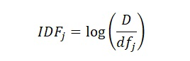
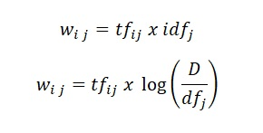
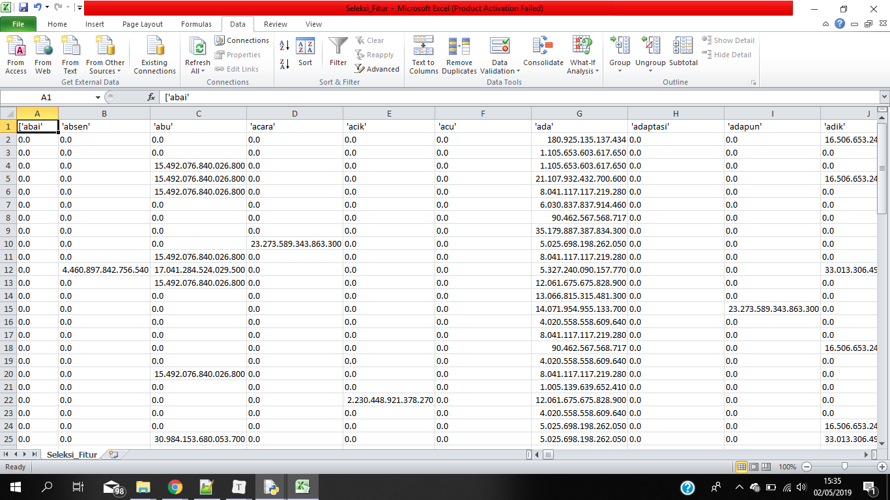

TF-IDF¶
Tf menyatakan jumlah berapa banyak keberadaan suatu kata dalam satu dokumen.1 IDF (Inverse Document Frequency) merupakan sebuah perhitungan dari bagaimana kata didistribusikan secara luas pada koleksi dokumen yang bersangkutan. IDF menunjukkan hubungan ketersediaan sebuah kata dalam seluruh dokumen. Semakin sedikit jumlah dokumen yang mengandung kata yang dimaksud, maka nilai IDF semakin besar.2
Rumus IDF :

Rumus TF-IDF :

source code tf-idf¶
df = list() for d in range (len(matrix[0])): total = 0 for i in range(len(matrix)): if matrix[i][d] !=0: total += 1 df.append(total) idf = list() for i in df: tmp = 1 + log10(len(matrix)/(1+i)) idf.append(tmp) tf = matrix tfidf = [] for baris in range(len(matrix)): tampungBaris = [] for kolom in range(len(matrix[0])): tmp = tf[baris][kolom] * idf[kolom] tampungBaris.append(tmp) tfidf.append(tampungBaris) tfidf = np.array(tfidf) print("tf_idf") with open('tf-idf.csv', mode='w') as employee_file: employee_writer = csv.writer(employee_file, delimiter=',', quotechar='"', quoting=csv.QUOTE_MINIMAL) employee_writer.writerow(katadasar) for i in tfidf: employee_writer.writerow(i)
Hasil Running :¶

Referensi :